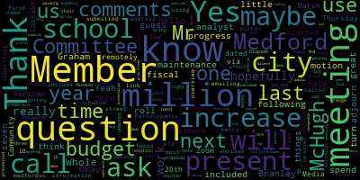

[Lungo-Koehn]: We'll get started. We have the Medford School Committee meeting dated Thursday, March 20th, 2025 at 5.30 p.m. It will be a Committee of the Whole meeting and held remotely via Zoom only. The meeting can be viewed through Medford Community Media on Comcast and Verizon. Participants can log or call in by using the following link or call-in number. The meeting ID is 9521257. 8486. Questions or comments can be submitted during the meeting by emailing medfordsc at medford.k12.ma.us. Those submitting questions or comments must include the following information, your first and last name, your metro street address, your question or comments. The committee of the whole meeting is being called to focus on the overview of the fiscal year 26 budget proposal and will be presented by Mr. Gerald McHugh, our budget analyst. and I'll ask member Ruseau to call the roll before we turn it over to you, Mr. McHugh. Thank you. Member Branley. Yeah, hello, present. Yes, hello, present.
[Adam Hurtubise]: Member Graham. Member Graham.
[Graham]: My button's not working, here.
[Adam Hurtubise]: Here. Member Olapade. I see one soon.
[Lungo-Koehn]: He just unmuted, so say one more time, Member Olapade.
[Graham]: Hi, everyone. I can't, my camera won't let me turn it on. Oh, I'll fix that. Thank you.
[Adam Hurtubise]: And you're here. You're here. Yes, Member Ridenfeld. Present. Member of the Sub-President, Mayor Lengelker.
[Lungo-Koehn]: Present, seven, present, zero absent. Next up, we'll just turn it right over to Mr. McHugh, our budget analyst. Thanks, thank you.
[Gerry McCue]: Thank you, Madam Mayor. I have to share my screen here.
[Adam Hurtubise]: Share screen. Okay.
[Gerry McCue]: Okay. Is this, people can see this now? All right. Well, we have concluded all our budget meetings at the school department. We've prepared a draft budget. And this is what we're gonna go over tonight, kind of the results of a lot of work by school staff and administrators here at Medford School System. We've had our meetings, as I said, As we talked about at the last committee of the whole, there were a number of new positions requested by principals and by directors. We are taking the position that, you know, we're gonna hold on those positions for now. Well, certainly there's budget considerations with adding a lot of new positions, but the two main reasons are that, We do have, or we are planning on adopting a new schedule for the high school, and we don't know what implications that might have on staffing. And of course, the federal grant status for next school year is a bit muddled right now. I suspect that, As we get closer to the summer, Desi may be able to give us some guidance on the status of those grants. We are planning as if we're gonna receive the grants we have this year, next year, but it's something that we're closely monitoring. And I will say, as you'll see, is that we are not contemplating any across the board staffing cuts that were necessary to balance the FY25 budget. So, basically the budget is in a lot better shape in FY25. So, the majority of the current staffing is funded in the budget proposal. The first Two categories is that we have to increase our current budgets to account for contract labor agreements that are expiring on June 30, and negotiations with those unions are underway. And we also have to adjust line items to take into account step increases that Many staff are entitled to, pursuant to their collective bargaining agreements. Any salary adjustments that were made during the year have to be accounted for in FY26. And any salary annualizations also have to be accounted for. We're gonna go through a list of budget adjustments that are necessary because, The current budgets are not aligned with their spending. We have one change we want to make due to food service regulations, and in a couple of instances we've lost grant funding, and we're going to account for that in FY 26. So the first line is to adjust the athletic budget by 32,500. And some line items within that budget have been level funded for a number of years. The coaches line and contract services in particular are not adjusted for the current level of spending, the number of teams where that are competing, et cetera. So we'll boost for that. During the course of this year, we had to add three one-on-one power positions. And this is mainly due to new students that entered our district with these positions on the IEPs. So we're required to put those on. They're currently working this year and we're going to adjust the budget next year to make sure there's funding for them. We do right currently, Medford charges its lunch monitors to the lunch fund, which is not appropriate or not allowed under the food service regulations, so we're proposing to shift those positions to the general fund. We lost grant funding for two important software applications that we use. One's called ST Math, the other is MAP Assessment Program. These are currently funded by grants this year. They're not eligible for grants next year, so we're going to include those in the budget. We have an administrative suite of software applications. Frontline is one. We have an internet service provider. We have cybersecurity applications. the ticketing system, the Raptor system for visitors. So these, all these applications were not fully funded and we're taking money from other areas of the school budget. And so in 26, we wanna get those applications fully funded and have the, you know, because they're critical to the operations of the school department. This year, we added an academic lead position, which is essentially a building, full-time building substitute teacher at the high school level. We added one to the vocational program due to vacancies. Some of the shops have a certain adult to student ratio attached to them. So when one teacher is out, it creates a problem and it really became important to have a regular building sub for the vocational program that could learn the students, learn the programs that are offered there to support the the director and the students. We've also have a history of using nurse daily substitutes when there's absences to the extent that they are available. And we have never had a budget for that. So we're gonna propose adding some money to the health services line to cover substitutes. For security monitors, we had kind of two separate issues. One, in the course of putting together this budget, we found that we did not sufficiently budget in FY25 for the number of security monitors we had. We had budgeted one less than we actually had on the rolls. And then during the course of FY25, we added a night shift security monitor because we had no way to provide coverage, dinner coverage for the other night shift security monitor. And in addition, there were concerns about a door that was unmonitored regularly over on the pool side of the building So that person was able to monitor that door as well. So in FY26, we're going to fix those budgets by adding enough money to fund 14 security monitors district-wide. And then at the beginning of FY25, engaged with City Year to have two schools receive City Year services. Those services are $100,000 per school. A portion of that 100,000 is charged to the before and after school program because their day overlaps into that program. But we essentially took money from our salary reserves to fund that this year. We wanna restore that money back to the salary reserve budget. And so we're looking to add the $130,000 to the two schools that receive those services. In addition, we've been working very hard with the, with that buildings and grounds department to try to right size those budgets. Um, this year we have some assistance from Paul Riggi from the city has been very helpful, uh, in, um, doing this review of operations. But the two main areas that need funding this year are, uh, to really right size our maintenance budget. So I put here a list of. just a variety of maintenance areas that have to be covered. And we've gone through and assigned them what we think is an appropriate budget. And out of that $457,000 increase, about 122,000 is attributable to more money for maintenance you know, we're establishing a grounds maintenance account and equipment repair and replacement account. And then also to address the extraordinary maintenance needs or capital needs, sometimes they're called in the schools and looking at the capital plan that was approved by the school committee and other projects that came up in the course of budget development, essentially. And so we're looking to increase that external maintenance line by $330,000. In that, we desperately need to replace the air conditioning systems in our tech rooms. Almost all of them have failed. So we wanna make sure we have enough money to go and begin to replace those. We are anticipating a replacement of a fire alarm panel at the Missittuck. And then to establish a count, some budget bandwidth to replace shades and blinds in the schools as needed, sometimes door replacements needed, you know, minor roof repairs, bike rack installations, things like that we're looking to accomplish in 2026. We do have some new spending we're gonna recommend within our network infrastructure. I should preface this by saying that we've captured all of the instructional software that we use, administrative software that we use, we've got them into their own accounts in the different programs that maintain these. And it's almost $800,000 worth of software that is operated as necessary for instruction and school operations. So we're proposing a new position of director of network and technology services that can lead that area into the future. A network technician that will work alongside of the current position that we have. We have one position described right now for network maintenance and really have to build up some capacity in that area. And then of course, we didn't have money for replacing equipment that's in the network. So we have servers and power supplies that have reached the end of their useful life and we need to begin replacing those. Likewise in special education, our transportation line is increasing in FY26 and by about $104,000. And I'm gonna give a separate, there's gonna be separate slides for special education, tuition and transportation a little bit later. Some, Students qualify for extended year programming and those roles are increasing. So $53,000 of this amount is to accommodate those new students in extended year program. And then we have a project transition that you might know about. This is a program for 18 to 22 special needs, students, it's, you know, primarily focuses on life skills. And to this date, they did not have a budget, they kind of cobbled together budget funding from different sources. So $12,000, I think is money well spent for this group of students. Uh, the high schools also requesting to expand or, uh, to increase the amount of money they have for the summer program. Actually, there's, there's no, um, general fund budget for the summer program. It, it, at one point it was, um, I guess it was contemplated that it would be strictly fee based. But over the years, students that need to attend the summer program sometimes qualify for a fee reduction or a waiver of the fee. So this $30,000 will provide the school with an opportunity to get more students into the program. properly funded. I don't know if you remember last at the last committee a whole meeting, the summer school revolving fund was in deficit and this is gonna go a ways to correct that. And then we also have in the security monitor contract, the ability to hire daily substitutes. We haven't done so yet, but we should, if we intend to do that, we should establish a small budget in the security program to fund daily subs. And then the guidance department would like to expand eligibility for PSA, AT exams, trying to get more juniors and sophomores to be able to take that program. And the world language department would also like to expand their assessments down to eighth grade. So students entering high school can be properly placed in the right level for whatever language they're signing up for. So each of those categories was a $2,000 increase to their existing budgets. We do have a little bit of savings to put towards this to offset. We have a student, we don't anticipate right now needing a tuition and transportation allotment for out of district vocational student. We have one student now who we expect to graduate this year. We currently have five student supervisory assistant positions. One of them are vacant. We would not fund the vacant position and that would leave four positions, one each for each of the elementary schools. And then to fund the $30,000 summer program, we're gonna reduce the supply budget at the high school principal's office, which I have discussed with the principal that still leaves her with a healthy budget of about $93,000 after that. So we have a total savings of $101,000. So for special education, um, there were a couple of, couple of things happening in transportation and tuition that aren't going to be readily called out in the budget. One is that, uh, for our new special ed transportation contract, the rates went up, um, significantly in FY 25, uh, it increased what we budgeted by 500, almost $557,000. We had balances in our circuit breaker funds, which we use to close that gap this year. Next year, we will need to continue to use circuit breaker funds towards the transportation budget in the same amount. And then in our uh, budget requests, we're looking to add $104,000, uh, to the general fund budget to cover the projected spending in FY 26. Uh, likewise in tuition, uh, in FY 25, we had a $5.5 million budget for tuition and the tuition budget is, um, funded from three sources, one, the general fund, two, IDEA grant, and three, circuit breaker funds. All the tuitions were increased by the state by 3.87%. We also adjusted the budget for graduating students, students that are aging out of the system, move-ins that happened this year that are responsibility of Medford now, and new placements from within our district. We did get a little bit lucky with this budget in that some of the students aging out are in residential programs, which are very expensive. So we actually had a drop in our overall tuition right now. Of course, you know, next year we may bring new out of district placements at some point, but for now we were able to level fund the general fund budget and we'll continue to charge about $850,000 to IDEA and then the remainder would be funded by Circuit Breaker. So between, we feel confident that The circuit breaker funds we'll receive in FY26 will cover the 1.6 in tuition and the 557,000 in transportation. And there should still be some left over in case we have any new tuitions to deal with in 26. So this is just a summary of the grouping that we did increase comes up to over $4.5 million. And we know that that's not gonna be the budget that we get, but it's the budget that we would like to have based on the work we've done with staff. It's a 5.5% increase. Uh, it's about 2.8% more than the city has given us in a preliminary, uh, projected school budget. Um, we do have, uh, we included in, in the budget. It's already baked in that we will continue to, uh, implement chargebacks to certain programs that use our, uh, facilities and our administrative services. And what we're working on now for the public hearing is looking to see what opportunities we have to close the funding gap and get as close as we can to what the city is projecting. What we're looking at right now is, you know, balances that are in our revolving funds that might be able to take on some positions. We are looking, making sure we have all our positions that are funded in grants properly allocated to those grants. We do think we have this, the question aid funds that, uh, the voters approved that provided, uh, $4 million for. High school, uh, new schedule implementation for teacher, um, salaries and for paraprofessional salaries there, uh, because those contracts were, um, in place for FYI 25 and the money was available in FYI 25. to the extent that, and we won't really know this for certain until negotiations conclude, but I'm thinking that there'll be a balance in that $4 million that we should figure out a way to carry that into FY26 to make sure that first, $4 million gets paid out the way the voters approved it. So I'm gonna, I think we can anticipate using question eight funds in 26 to help with those collective bargaining agreements that get approved either before this year or early next year. There's also, $391,000 in homeless transportation reimbursement that the state provides. And we would like to use that to offset our homeless transportation account and kind of get us closer to that city number. So that at the public hearing on Monday, we'll be able to provide a list of other opportunities that we identify to help fund the budget we're presenting tonight.
[Adam Hurtubise]: Let's see.
[Lungo-Koehn]: If I may, from the chair, ask a question.
[Adam Hurtubise]: Sure.
[Lungo-Koehn]: Because 5.5% increase over fiscal year 25 And then you mentioned the $4 million carryover, because yes, we need to spend that the way the voters expect us to spend it. But we also can use some of that money for things we outlined in the questions, which I think would cover a lot of what you had in that $500,000 range for maintenance. So is that being included to be paid for out of the 4 million, or is that included in the 5.5% increase? Because we obviously don't want to use the 4 million to extenuate a situation where we're keeping personnel that we can't afford down the line and just getting in another hole. So can you maybe explain that? Will that bring this down to 5%?
[Gerry McCue]: The $4 million, we're not going to know until negotiations are settled. But we expect that a portion of that will be paid out in FY25, particularly for the schedule implementation. And it could be that some, in the final settlement, that some monies get paid out in FY25. I don't anticipate we'll have the whole 4 million, but there might be a balance to tap. And as far as the question seven money, that's already kind of baked in into the bottom line. It was used to, we submitted a supplemental budget. So a lot of those positions and spending that got covered in the supplemental budget are being carried into FY26, so that money's basically accounted for.
[Lungo-Koehn]: Yes, I know the three million is accounted for, it's the four million, so are we reserving a certain portion for the contracts which aren't up until June 30th? I guess, what one-time costs can we use so there's not a 5.5% increase? because we've been adding things.
[Gerry McCue]: Yeah, we're gonna with this, this is our job tomorrow and over the weekend is to see, you know, what are the resources we can bring to be to get that 5.5% down. So that's, you know, that'll be our job to work on that. But, um, the, there will be some portion of the 4 million that I think will still be available for teacher and paraprofessional contracts in 26. And then of course, the other thing we have to be cognizant of is that eventually when that money runs out, it has to be replaced in the budget or positions have to be cut But so we should be intentional about how we want to kind of wind down from whatever money out of question eight gets rolled into 26.
[Lungo-Koehn]: Yeah, and hopefully there's more progress before just next week, because with a $7.5 million override, you wouldn't we were, I think we were all hoping maybe not to be in a position where we had to cut anything if we planned correctly. So hopefully there's more work that will be done. So we're not in seeing this picture is as a 5.5% increase and it's a little bit more manageable.
[Gerry McCue]: Yeah.
[Lungo-Koehn]: Okay.
[Gerry McCue]: We're on the same page.
[Lungo-Koehn]: Okay. Thank you. Member Graham.
[Graham]: Thank you, so I just wanted to add a few things. So Monday night, our budget hearing is simply to frame our request to the municipal budget right to the municipal government. So. This is where we're saying to everyone, including the council and the mayor, and I know you're here, but this is what we believe that we need. That 5.5% increase is actually not different than what our increase was outlined in Chapter 70. So when I looked at the Chapter 70 numbers, They outlined that our portion would be going up by 5.5% or something like roughly there. So that number is consistent with even what the state. Outlined that our number would look like right now. It's more complicated than that, but I think directionally. That number is not like, sort of out of bounds. The budget process that we've laid out has another step later in probably May and into June to get to full reconciliation of what the municipal government is able to provide, which may require changes to what we outline and approve as our request, right? So this is our request. There's a step two that says, If our request is different than what the city ultimately can provide based on what the mayor recommends based on what the council proves, then we have to take another vote to approve. Like, a balanced budget, right? The other thing that I'll mention, because we do have so many new members is. Anytime that we are in active negotiations with the teachers union in particular, this time in the budget is as uncertain as it can possibly be. Because out of our 800-ish staff, almost 500 of them sit in the teachers union. So without clarity on that just yet, Um, there's a lot of uncertainty that between now and June, hopefully fingers crossed, we will, like, get to certainty on and, like, put, you know, have a path forward that will allow us to refine this number with facts instead of. You know, just like we heard from Bob last night, like, we're planning, but these numbers are sort of always changing. So I think that. When I remember going through this process a few years back, where we were at the end of a teacher contract, it was the same. Sort of way, I'm certain feeling about, like, what was going to happen and where it was going to land. So, I guess, like, overall, I just want to make sure that the people who are listening. Understand that a, this is a request. B, there is a reconciliation process, and C, the uncertainty that Jerry's having to deal with right now is likely to continue to change between requests and balanced budget and come into focus. So all of that to say, Thank you, Jerry, for putting this together, because it allows us to see what the totality of the situation is. And I think for a really, really long time, the school committee never got to see what the totality of the situation was and it led to things like. Underfunded maintenance budgets chronically that we're now trying to peel out of so. This, I don't I don't think this is a, like, a wild budget in any way. And I also don't think that it's like a final, like, catastrophic. Number, I just think, like, this is where we are in the process and. I'm glad that we're talking in plain language about what we believe that the district needs to serve students because that is a piece that was so missing for so long. And now we can together make the decisions that we need to make between now and the end of June to get where we need to go and to get to that balanced budget. I just want to say thanks to Jerry he did a really great job, especially with like all the uncertainty that exists for us right now and it's not it's not just the teachers contract we have five contracts renewing on July one so there's a lot there's a lot of moving parts that. He can't his crystal balls probably is broken his mind. So it's really hard to know, like, where all of those things will land, but we're trying to work through all of that. So I just wanted to lay that out there, both from a process perspective and from a, like. Yes, this is uncertain. Yes, this looks. Maybe alarming, but. I, I do think, like. It's like the right place to be in March, which is, by the way, earlier than we've ever been in this place. So all things considered, like, I'm calling tonight a win, even if it's not like a perfect slam dunk, right? Like, I think we're on the right track. Thank you.
[Gerry McCue]: Thank you.
[Lungo-Koehn]: Thank you. I'll keep the faith, I guess. If there's no other questions, thank you for your presentation, Jerry. I look forward to your continued work and maybe some adjustments on Monday. And because of course you all know this body and the city council and myself really have prioritized our public schools. And I agree with member Graham, we have deferred maintenance for far too long. So there's great progress that has been made. great to balance this a little better. So the ask is something that, you know, maybe the city can really get to, you know, reasonable ask. And I know member Reinfeld asked last night, you know, some of the city services that have been put on hold because of us trying to really fund the schools as best we can the last several years. So, you know, there's work to do on the city and the schools and hopefully we'll get there within the next month or so. Is there a motion to adjourn if there's no further questions? Motion to adjourn. Member Branley seconded by?
[Adam Hurtubise]: Second.
[Lungo-Koehn]: Member Intoppa? I'm going by voices. I hope I'm doing OK. Roll call, please.
[Adam Hurtubise]: Member Branley? Yes. Member Graham?
[Lungo-Koehn]: One more time.
[Adam Hurtubise]: Sorry, can you hear me?
[Lungo-Koehn]: I got you there.
[Adam Hurtubise]: Remember Intoppa? Yes. Remember Olapade? Yes. Remember Reinfeld?
[Lungo-Koehn]: Yes.
[Adam Hurtubise]: Remember, so yes, Mayor Lungo-Koehn.
[Lungo-Koehn]: Yes, seven in the affirmative, zero in the negative. Meeting is adjourned.
|
total time: 4.5 minutes total words: 674  |
total time: 5.57 minutes total words: 835 |
||
{kind=link}
{kind=link}